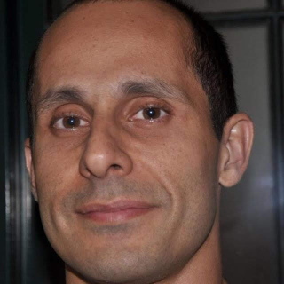
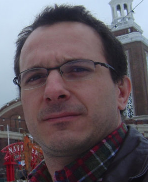

We are looking for new PhD students, Postdocs, and Master students to join the team (see openings) !
Jump to staff, master and bachelor students, alumni, administrative support, lab visitors.
Staff

Milan P Allan
Associate professor, started Jan 2015 </div>  


 ## Administrative Support Ellie van Rijsewijk is helping us (and other groups) with administration.
## Administrative Support Ellie van Rijsewijk is helping us (and other groups) with administration.
Jianfeng (Jacky) Ge
Postdoc, started Oct 2019 </div> </div> Jiasen Niu
Postdoc, started Oct 2020 </div> Jinwon Lee
Postdoc, started July 2021 </div> </div> Tjerk Benschop
PhD Student, started November 2018 </div> Amber Mozes
PhD Student, started September 2021 </div> </div> Maialen Ortego Larrazabal
PhD Student within a collaboration with the Swart Lab </div> Kees van Oosten
FFine mechanical engineer (also associated with the FMD) </div> </div> Hugo van Bohemen
Fine mechanical engineer (also associated with the FMD) </div> Ilse Kuijf
Shared PhD student in the [van Nieuwenburg group](https://evert.info), working with us </div> </div>